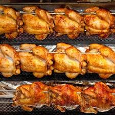

Roasted Chicken Recipe

Desciption
How to prepare roasted chicken in Uganda
Ingredients
- Chicken – 6 pieces pre-roasted/ enkalilire
- Onions – 2 big
- Garlic – 4 cloves
- Chicken gravy powder – 2 table Spoon
- Chicken masala – 1 table Spoon
- Cooking oil – 1 table Spoon
- Cot mill – 1 spring
- Salt and pepper to taste
Method For Roasted Chicken
- Clean the chicken
- Clean and chop onions and garlic
- Crush the onions, garlic, salt, pepper, cot mill, chicken masala and chicken gravy
- Mix the crushed ingredients with oil then marinate the chicken pieces and keep
it for between 10 – 15 minutes before roasting
- Place the chicken on a greased baking tray and put in a hot oven 180 ◦c
- Keep basting the chicken that is powering oil and extract chicken juices
on the chicken while roasting
- Roast until golden brown and serve with a carbohydrate and a vegetable preferably
raw vegetables.